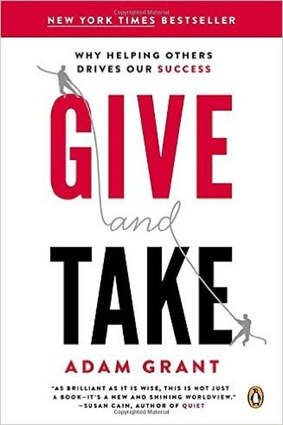

Library › Psychology & People
Give and Take — Summary & Key Lessons

Why helping others drives your success — and how to give without getting burned.
📖 OPEN THE FULL INTERACTIVE BREAKDOWN →🌐 Read it in Hindi, Hinglish, Gujarati, Tamil & 22 more languages — free, with audio.
💡 The Big Idea
Grant's research divides the world into givers, takers and matchers — and finds that givers dominate both the top and the bottom of success rankings. The difference between the giver who wins and the giver who burns out is strategy: giving broadly and sustainably, setting boundaries, and recognizing takers early. Generosity, practiced intelligently, is a competitive advantage.
🧠 The 6 Key Lessons
Lesson 1: Givers Dominate the Top — and the Bottom
Chapter 1: Good Returns
Grant's data shows givers are over-represented at both extremes of success: the most productive engineers, doctors and salespeople are often givers, but so are the worst performers, because unguarded giving leads to burnout and exploitation. The difference is not whether you give but how strategically you give. Generosity without wisdom is a leak; generosity with strategy is a magnet.
📖 Example: In one study of sales professionals, the givers brought in the highest revenue — but the lowest performers were also givers who gave so much they had no time left to sell. The top givers succeeded because they gave in ways that built reputation and… Read the full example →
⚡ Do this: Audit your giving: which acts build reputation and relationships, and which are pure leaks? Keep the first, trim the second.
Lesson 2: The 5-Minute Favor: Give Small, Give Often
Chapter 2: The Peacock and the Panda
Grant's practical rule: help anyone in five minutes or less, with no expectation of return — an introduction, a piece of advice, a warm referral. Small, frequent, low-cost favors compound into a reputation that opens doors you never asked to open. You don't need to be a philanthropist; you need to be consistently useful.
📖 Example: A junior employee known for quick, thoughtful help — a document reviewed, a contact introduced — was promoted faster than more talented but insular peers, because decision-makers already knew his name through his giving. The favors were tiny; the reputation… Read the full example →
⚡ Do this: This week, perform one 5-minute favor daily — an intro, a recommendation, a useful link — with zero expectation of return.
Lesson 3: Recognize Takers Early and Protect Your Giving
Chapter 3: The Ripple Effect
The giver's classic failure is mistaking takers for matchers — people who reciprocate. Grant advises a simple test: how does the person treat those who can do nothing for them? Takers charm up and exploit down. Protect your generosity by directing it toward genuine givers and matchers, and by saying no to those who never return the flow.
📖 Example: A giver kept funding a colleague's requests for months before realizing the colleague never helped anyone else and hoarded credit. The fix wasn't to stop giving — it was to redirect the giving toward teammates who reciprocated, and to refuse the taker's next… Read the full example →
⚡ Do this: Watch how people treat those below them in status. Direct your generosity toward the ones who lift others, not the ones who exploit them.
Lesson 4: Group Givers Create the Most Valuable Teams
Chapter 4: The Power of Powerful Communication
Grant shows that teams succeed when at least one member is a 'group giver' — someone who benefits the whole team even at personal cost, sharing credit and helping others improve. Such members raise the performance of everyone around them, and the team outperforms collections of individual stars. The best hire is often the person who makes everyone else better.
📖 Example: In engineering teams, the highest-performing teams were not those with the most talented individuals but those with group givers who shared knowledge and covered for teammates. The team's output exceeded the sum of its parts because the giving connected the… Read the full example →
⚡ Do this: In your team, be the one who shares credit and knowledge generously — and notice how team output responds.
Lesson 5: Burnout Comes From Unprotected Giving
Chapter 5: The Art of Motivation Maintenance
Why do some givers thrive while others flame out? Grant's answer: thriving givers maintain 'otherish' motivation — caring deeply about others while also protecting their own interests — and take strategic breaks to renew. Pure self-sacrifice is not sustainable; sustainable giving includes self-care, boundaries and the ability to say no.
📖 Example: Volunteers who felt obligated to give continuously burned out, while those who chose their giving and scheduled renewal stayed active for years. The difference was not the amount given but the presence of choice and recovery in the giving. Read the full example →
⚡ Do this: Give from choice, not obligation, this month — and schedule one recovery break for every significant giving commitment.
Lesson 6: Advice-Seeking Is a Form of Giving
Chapter 6: The Generation of Generosity
Grant's counterintuitive finding: asking for advice makes people like you more, because it signals respect and gives them the pleasure of being useful. The humble ask is itself a gift — it lets others contribute and strengthens the bond. The self-sufficient person who never asks loses both help and connection.
📖 Example: In experiments, people who asked a stranger for advice rated the stranger more favorably afterward than those who had a neutral chat — the advice-seeker had given the advisor the gift of being valued. Asking well is a social superpower. Read the full example →
⚡ Do this: Ask one person for genuine advice this week — and apply it. Notice how the relationship warms.
✅ 5-Step Action Plan
- Audit your giving: keep the strategic, trim the leaks
- Perform one 5-minute favor daily this week
- Test people by how they treat those who can't help them
- Be the group giver on your team — share credit and knowledge
- Give from choice, and ask for advice from someone this week
⚠️ When This Doesn't Work
⚠️ When this doesn't work: 'Give first' can be weaponized against you in zero-sum environments where credit is hoarded and takers dominate leadership — research also shows givers can end up exploited when the culture doesn't reciprocate. Read the culture before over-giving, and remember boundaries are part of the strategy, not a betrayal of it.
💀 The Graveyard Proves It
🎩 Bernie Madoff — The $65 Billion Lie That Ran 30 Years. Burn: $65B — history's largest Ponzi. Read the full case study →
💬 Best Quotes from Give and Take
- “The best way to get to the top is to take others with you.”
- “Givers don't succeed by giving less; they succeed by giving smarter.”
- “Success is not just about talent and effort — it's about how you interact with others.”
Interactive version: mark lessons as read, listen in your language, share quote cards.